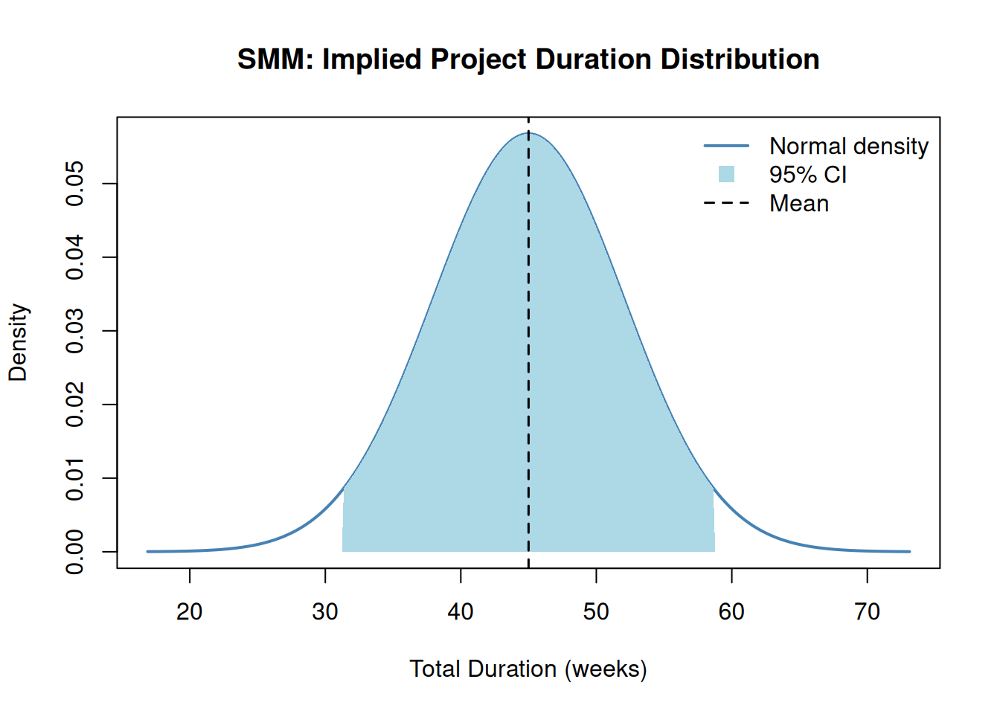

library(PRA)
set.seed(42)3 May I Have a (Second) Moment? The Second Moment Method
“All models are wrong, but some are useful.” — George E. P. Box
The SMM is a deliberately simplified model. It assumes the total project duration is normally distributed. It ignores the shape of individual task distributions. And it is, in Box’s sense, useful — fast enough to run before a meeting ends, and honest enough to use in a risk report.
Sometimes you don’t need a full Monte Carlo simulation. Sometimes you need an answer in thirty seconds, not thirty minutes. You have means and variances, a correlation matrix, and a deadline. Enter the Second Moment Method — the analyst’s equivalent of a napkin calculation that is actually defensible.
The name comes from statistics: the “first moment” of a distribution is its mean; the “second moment” (more precisely, the central second moment) is its variance — and the Second Moment Method is named for exactly that. It’s the fastest way to get from “I have means and variances” to “I have a project risk estimate.”
3.1 When to Use SMM
TipSMM vs. Monte Carlo: The Decision Rule
Use SMM when:
- You need results in seconds, not minutes
- You only have mean and variance estimates (no full distribution)
- Tasks are approximately normal and correlations are well-characterized
- You want a quick sanity check before investing in a full MCS
Use Monte Carlo (Chapter 2) when:
- Tasks have non-normal distributions (triangular, uniform, lognormal)
- You need accurate tail behavior (P90, P95, P99)
- Skewness matters — asymmetric distributions require simulation to capture correctly
Think of SMM as a reconnaissance tool. It tells you the territory before you commit to the full expedition.
3.2 How It Works
For a project with \(n\) tasks, SMM computes:
Total mean: Sum of individual task means: \[E[X] = \sum_{i=1}^{n} E[X_i]\]
Total variance: Sum of variances plus twice the sum of all pairwise covariances: \[\text{Var}(X) = \sum_{i=1}^{n} \text{Var}(X_i) + 2 \sum_{i<j} \text{Cov}(X_i, X_j)\]
Covariance: Derived from the correlation matrix: \[\text{Cov}(X_i, X_j) = \rho_{ij} \cdot \sigma_i \cdot \sigma_j\]
By the Central Limit Theorem, the total is approximately normally distributed when there are many tasks — so we get confidence intervals for free (Benjamin and Cornell 2000).
3.3 Example
We analyze a 3-task project with task durations in weeks. Each task has a known mean and variance, and correlations between tasks are provided.
task_means <- c(10, 15, 20) # Expected duration for each task (weeks)
task_vars <- c(4, 9, 16) # Variance of each task duration
cor_mat <- matrix(c(
1.0, 0.5, 0.3,
0.5, 1.0, 0.4,
0.3, 0.4, 1.0
), nrow = 3, byrow = TRUE)result <- smm(task_means, task_vars, cor_mat)
cat("Total Mean Duration: ", round(result$total_mean, 2), "weeks\n")Total Mean Duration: 45 weekscat("Total Variance: ", round(result$total_var, 2), "\n")Total Variance: 49.4 cat("Total Std Deviation: ", round(result$total_std, 2), "weeks\n")Total Std Deviation: 7.03 weeks3.4 Implied Distribution and Confidence Interval
SMM assumes the total project duration is approximately normally distributed. This allows us to construct a confidence interval directly from the mean and standard deviation.
A 95% confidence interval for total project duration is approximately:
\[\bar{X} \pm 1.96 \cdot \sigma\]
total_mean <- result$total_mean
total_sd <- result$total_std
ci_lower <- total_mean - 1.96 * total_sd
ci_upper <- total_mean + 1.96 * total_sd
cat("95% CI: [", round(ci_lower, 1), ",", round(ci_upper, 1), "] weeks\n")95% CI: [ 31.2 , 58.8 ] weeksThe plot below shows the implied normal distribution of total project duration, with the 95% confidence interval shaded:
x_range <- seq(total_mean - 4 * total_sd, total_mean + 4 * total_sd, length.out = 300)
y_range <- dnorm(x_range, mean = total_mean, sd = total_sd)
plot(x_range, y_range,
type = "l", lwd = 2, col = "steelblue",
main = "SMM — Implied Project Duration Distribution",
xlab = "Total Duration (weeks)", ylab = "Density"
)
x_ci <- x_range[x_range >= ci_lower & x_range <= ci_upper]
y_ci <- dnorm(x_ci, mean = total_mean, sd = total_sd)
polygon(c(ci_lower, x_ci, ci_upper), c(0, y_ci, 0),
col = "lightblue", border = NA
)
abline(v = total_mean, col = "black", lty = 2, lwd = 1.5)
legend("topright",
legend = c("Normal density", "95% CI", "Mean"),
col = c("steelblue", "lightblue", "black"),
lty = c(1, NA, 2), lwd = c(2, NA, 1.5),
pch = c(NA, 15, NA), pt.cex = 1.5,
bty = "n"
)
3.5 Comparison with Monte Carlo Simulation
NoteWhat This Comparison Is Testing
To isolate the effect of distributional assumptions (normal vs. any shape), the MCS below uses the same task parameters as the SMM but with no correlation matrix — i.e., tasks are treated as independent. This allows a clean apples-to-apples test: both methods sum three independent normal tasks, so any remaining difference comes from simulation variance alone.
The earlier SMM result (total mean = 45 weeks, total SD including correlations) is not the right benchmark here — that figure includes covariance from the correlation matrix, which the MCS below omits. To compare correlated results, you would pass the same cor_mat to mcs().
Running Monte Carlo simulation with the same task distributions validates the SMM. The two methods should yield very similar total means; differences in variance arise from how each handles correlated sampling.
task_dists_for_mcs <- list(
list(type = "normal", mean = task_means[1], sd = sqrt(task_vars[1])),
list(type = "normal", mean = task_means[2], sd = sqrt(task_vars[2])),
list(type = "normal", mean = task_means[3], sd = sqrt(task_vars[3]))
)
mcs_result <- mcs(10000, task_dists_for_mcs)smm_var_nocor <- sum(task_vars)
comparison <- data.frame(
Method = c("SMM (independent)", "Monte Carlo (10,000 runs)"),
Total_Mean = round(c(result$total_mean, mcs_result$total_mean), 2),
Total_Variance = round(c(smm_var_nocor, mcs_result$total_variance), 2),
Total_StdDev = round(c(sqrt(smm_var_nocor), mcs_result$total_sd), 2)
)
knitr::kable(comparison, caption = "SMM vs. Monte Carlo Comparison (independent tasks)")| Method | Total_Mean | Total_Variance | Total_StdDev |
|---|---|---|---|
| SMM (independent) | 45.00 | 29.00 | 5.39 |
| Monte Carlo (10,000 runs) | 45.01 | 29.83 | 5.46 |
The two methods agree closely on the mean and variance. SMM is faster but assumes normality; Monte Carlo is more flexible and can use any distribution type.
3.6 Benefits and Limitations
| SMM | Monte Carlo | |
|---|---|---|
| Speed | Instant (analytical) | Slow (thousands of iterations) |
| Inputs needed | Mean + variance per task | Full distribution per task |
| Distribution assumption | Normal (by CLT) | Any distribution |
| Correlation handling | Explicit covariance formula | Cholesky decomposition |
| Skewness / tails | Ignored | Captured accurately |
| Best for | Early estimates, quick checks | Detailed risk analysis, non-normal tasks |
3.7 Summary
For projects where risks are interconnected through shared root causes, the Bayesian approach in Chapter 6 provides a richer updating framework beyond means and variances alone.
3.8 Exercises
By hand. Compute the project mean and total variance by hand for two tasks with means 5 and 10 weeks, variances 1 and 4, and a correlation of 0.3. Then verify your answer using
smm().Effect of correlation. Run
smm()for the 3-task example above with three different correlation matrices: (a) identity matrix (all tasks independent), (b) the original matrix (moderate correlation), and (c) a matrix where all off-diagonal entries are 0.9. Plot the three implied normal distributions on the same graph. What does correlation do to the spread?Normality check. ★ The SMM assumes normality via the Central Limit Theorem. This works best when there are many tasks. Run
mcs()for the same 3-task project, then overlay the SMM normal distribution on the MCS histogram. How well does normality hold? What if two of the tasks followed exponential distributions instead of normal?SMM for costs. Your project has four cost items with means $50K, $80K, $30K, and $60K and standard deviations $10K, $15K, $5K, and $12K. Assume moderate positive correlation (0.3) between all pairs. Use
smm()to compute the P90 cost estimate (mean + 1.28 × SD).When to stop. ★ Under what conditions would you trust the SMM result over Monte Carlo? Under what conditions would you distrust it? Write a one-paragraph decision rule for choosing between the two methods.